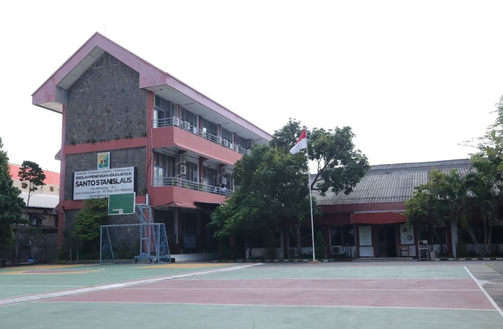

Ekstrakurikuler SMA Katolik Santo Stanislaus Surabaya telah berdiri sejak berdirinya sekolah pada tahun 1985. Awalnya, kegiatan ekstrakurikuler hanya terbatas pada beberapa bidang seperti Pramuka, Paduan Suara, dan Olahraga.
Seiring berjalannya waktu dan perkembangan zaman, ekstrakurikuler terus berkembang dan bertambah jenisnya. Saat ini, terdapat lebih dari 15 divisi ekstrakurikuler yang mencakup bidang akademik, olahraga, seni, keagamaan, dan teknologi.
Berbagai prestasi telah diraih oleh siswa-siswi dalam kegiatan ekstrakurikuler, baik di tingkat kota, provinsi, maupun nasional. Hal ini menjadi bukti komitmen sekolah dalam mengembangkan potensi siswa secara menyeluruh.
Komitmen kami dalam mengembangkan potensi siswa melalui kegiatan ekstrakurikuler
Menjadikan ekstrakurikuler sebagai wadah pengembangan potensi, bakat, dan minat siswa yang berkualitas, berprestasi, dan berakhlak mulia, sehingga mampu bersaing di tingkat nasional dan internasional.
Susunan pengurus SMA Katolik Santo Stanislaus
Koordinator Utama
Berbagai pilihan kegiatan ekstrakurikuler yang tersedia
Organisasi Siswa Intra Sekolah
Gerakan Pramuka
Choir & Vocal Group
Tim Basket Putra & Putri
Robotika & Programming
Debate & Public Speaking
Tari Tradisional & Modern
Photography & Videography